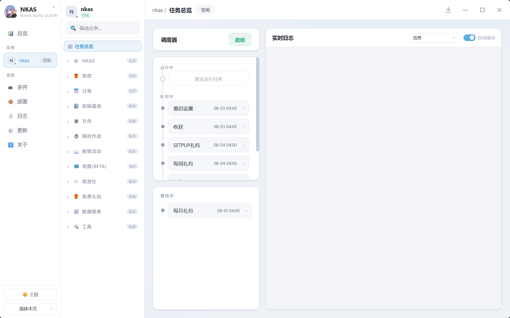

NIKKEAutoScript
胜利女神：NIKKE 自动日常脚本
支持所有 PC / 模拟器 客户端（国服除外），解放双手，日常全包


胜利女神：NIKKE 自动日常脚本
支持所有 PC / 模拟器 客户端（国服除外），解放双手，日常全包
从每日日常到大型活动，一站式自动化
PC 客户端 / 各类模拟器通吃，支持多屏幕、自动启动游戏与任务，并提供快捷键与接口控制。
收获、歼灭、派遣、咨询送礼、友情点、免费钻、商店购买、每日/每周任务与 Pass 领取，一次配置全自动。
普通 / 特殊竞技场自动战斗，特殊竞技场监控，冠军竞技场竞猜，排名奖励自动领取。
大小活动自动推图、扫荡、挑战、签到、商店购买、协同作战与部分小游戏，活动免费抽卡不落下。
支持自动打红圈、掉落截图，模拟室与超频、企业塔、联盟突袭、个人突袭全覆盖。
自动更新 / 定时更新，支持 Docker 部署、Hosts 修改，blablalink 社区任务与 CDK 自动兑换。
现代化 Web UI，任务状态一目了然

下载前请务必阅读以下内容
选择适合你的方式，1 分钟即可开跑
三步开始自动化日常
从 Release 下载完整包，解压到纯英文路径，避免运行期编码问题。
双击运行 nkas.exe，等待自更新完成后自动打开 Web UI。
在设置中选择客户端与模拟器，勾选需要的任务，点击开始即可。详见 Wiki 安装指南。
更多问题请查阅 Wiki 常见问题
不支持。NKAS 支持国际服、日服、韩服等所有 PC/模拟器 客户端，唯独不支持国服客户端。
项目目前主要支持 PC 端、主流安卓模拟器，Windows 桌面版开箱即用；同时支持 ARM 架构的模拟器和开发板，配合 Docker 部署 NKAS 即可运行。
完全免费并基于 GPL-3.0 开源，源码可审计。项目仅供学习交流，请遵守游戏用户协议。
可以在 GitHub Issues 提交问题，或加入 QQ 群 823265807、Telegram 群组获取帮助。
喜欢本项目请点个 ⭐ Star，或请作者喝一杯蜜雪冰城 🍦